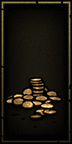
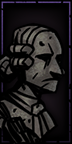
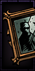
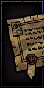
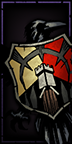
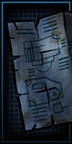
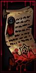
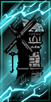
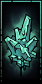

Here, I'm going to show you some of the things you can get in all the dungeons :D

Gold
Your currency! You can hold up to 1,750 in your inventory by default.

Bust
This is one of the 4 heirlooms! It helps you upgrade and build structures :D

Oil Painting
It is the hardest heirloom to obtain and appears in small quantities, but it is extremely useful for upgrading your heroes.

Deed
It’s also very useful for saving money, improving your heroes' resilience, and getting even more heroes, 10/10.

Crest
It’s used for everything and is easy to get; it couldn't possibly be bad, and it’s always necessary XD

Blueprint
This allows you to bould new building! (Only If you have Crimson Court DLC)

Crimson Court Invitation
It's an invitation to experience more suffering! :D (Crimson Court DLC)

Memory
It’s not actually that useful; it just lets you avoid hunger checks forever, but by the time you get it, it doesn't really matter that much anymore XD.
(Farmstead DLC)

Comet Shard
Very useful, but somewhat difficult to obtain. It allows you to buy very useful trinkets and one of the most overpowered items in the game.
(Farmstead DLC)